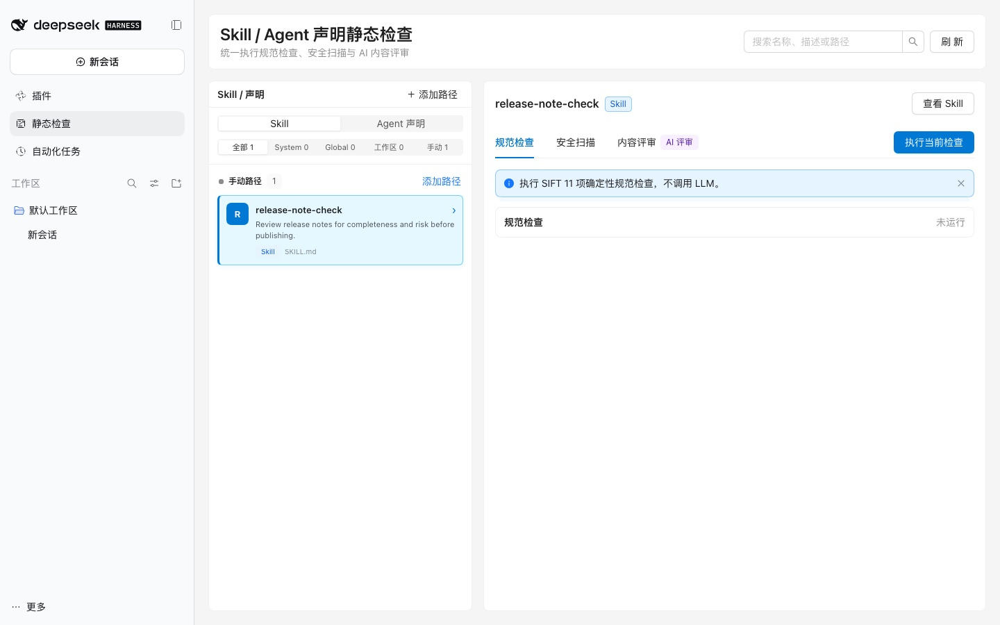

主要组成
| 组成 | 版本 | 作用 |
|---|---|---|
| Static Check Bundle安装入口 | 1.1.2 | 安装 dsh-static-check，并依赖共享的 Runtime Bundle。 |
| dsh-static-checkDSH 集成与工作台 | 1.1.1 | 启动时检查运行环境并默认安装 SIFT；提供 Skill / Agent 工作台、手动路径管理、/skill-check 命令和 skill_static_check Agent 工具。 |
| Shared Runtime Bundle共享运行时 | 1.1.3 | 包含 dsh-runtime-bundle@1.1.3、dsh-provider-auth@1.1.0 和 dsh-env-health@1.1.2；与 Insight 同时安装时只挂载一次。 |
| SIFT底层静态检查引擎 | 2.6.0-dev.1193fa7 | 提供 analyze、vet 和 critique 三类检查能力。CLI 显示版本为 2.6.0，默认安装到 ~/.dsh-sift/runtime/2.6.0-dev.1193fa7/。 |
SIFT 是底层静态检查引擎。 插件启动时会检查运行环境；如果尚未安装，会从固定 commit 1193fa77e27ed01d657de7df1db881b61114d569 自动准备。Provider Auth、环境检查和 SIFT 安装任务由共享 Runtime Bundle 统一管理。
适合检查哪些声明？
Static Check 直接读取声明文件，不会执行目标 Skill，因此适合在发布前检查内容和风险。
- 发布 Skill 前：检查名称、description、触发条件、示例和引用结构是否符合规范。
- 审查外部 Skill：在安装或复用第三方 Skill 前检查敏感信息、结构问题和潜在风险。
- 修改声明后：对比修改前后的规范分数、失败项和安全扫描结果。
- 检查 Agent 声明：使用 AI 内容评审检查 Agent 指令是否清楚、完整和可执行。
三类检查
规范检查
执行 SIFT 的 11 项确定性声明检查，不调用 LLM，适合每次修改后运行。
安全扫描
汇总内置 secrets-scan、structure-check 和可选的 aguara、skill-scanner 结果。
AI 内容评审
按需调用模型分析声明质量，会消耗模型时间和 token；默认不启用。
规范检查和安全扫描不调用 LLM；只有 critique 内容评审会使用 Provider。
检查结果示例
安全扫描
检查硬编码凭据、危险结构和外部扫描器 findings，并以 SAFE、REVIEW_NEEDED 或 BLOCKED 汇总风险结论。

AI 内容评审
按维度检查声明是否清楚、完整、可执行，并展示证据、缺口和投票结果；该检查会调用模型并消耗 token。

1. 准备运行环境
| DSH | ^0.2.1-rc.2。 |
|---|---|
| Node.js | >=24。 |
| Python | >=3.10，用于准备 SIFT 运行时。 |
| SIFT | 固定 commit 1193fa77e27ed01d657de7df1db881b61114d569，运行时标识 2.6.0-dev.1193fa7，CLI 显示版本 2.6.0。插件启动时会默认检查并安装。 |
| aguara | 可选，当前版本 0.28.0；不自动安装，缺失时只影响对应扫描项。 |
| skill-scanner | 可选，当前版本 1.1.0；不自动安装，未安装时显示提醒，不阻止规范检查。 |
| Provider Auth | 可选。只有 AI 内容评审需要可用的 Provider 凭据。 |
2. 安装 Bundle
@fuxi-ailabs/dsh-static-check-bundle在 DSH 插件市场中添加索引，找到 Static Check · Skill 静态检查 并安装。
https://fuxi-ailabs.github.io/dsh-plugin-market/index.json也可以直接安装当前 Bundle 与共享 Runtime Bundle：
dsh plugin --profile <profile> add @fuxi-ailabs/dsh-runtime-bundle@1.1.3 @fuxi-ailabs/dsh-static-check-bundle@1.1.2安装完成后重启 DSH。首次检查时会自动准备 SIFT，也可以使用环境中已有的 sift 命令。
3. 选择检查对象
- 打开工作台
从 DSH 左侧打开「静态检查」，进入 Skill / Agent 声明检查页面。
- 选择 Skill 或 Agent 声明
使用 System、Global、工作区或手动路径中的声明；也可以通过「添加路径」加入本地
SKILL.md或 Agent 声明文件。 - 选择检查类型
右侧可切换「规范检查」「安全扫描」「内容评审」。点击「执行当前检查」只会运行当前选中的类型。
4. 运行并查看结果
推荐先运行规范检查，再按需运行安全扫描和 AI 内容评审。下面的测试案例使用 aico-ppt Skill，11 项规范检查全部通过。

| 检查 | 结果怎么看 |
|---|---|
| 规范检查 | 查看 PASS / FAIL、总分和失败项；不调用 LLM。 |
| 安全扫描 | 查看扫描器状态、findings、severity 和最终 verdict；外部扫描器可选择跳过。 |
| 内容评审 | 查看各维度状态、证据、缺口和投票结果；会调用模型。 |
5. 检查运行环境
打开「插件」→ Static Check 的配置页，检查 SIFT、可选扫描器、Provider Auth 和静态检查服务。检查只读取环境，不修改配置。

使用 CLI
以下命令直接在 DSH 会话输入框中执行，与 Static Check 工作台执行的是同一套检查服务。
/skill-check <path>
/skill-check <path> --checks analyze,vet
/skill-check <path> --all
/skill-check <agent.md> --kind agent只指定路径时，Skill 默认运行 analyze 和 vet；Agent 声明默认只运行 critique。
常用参数
| 参数 | 用途 |
|---|---|
--checks analyze,vet | 指定一个或多个检查类型，可用 analyze、vet、critique。 |
--all | 执行 analyze、vet、critique 三类检查；包含 AI 评审和 token 消耗。 |
--with-critique | 在默认检查之外增加 AI 内容评审。 |
--kind agent | 检查 Agent 声明；当前只支持 critique。 |
--skip-external | 安全扫描跳过外部扫描器，只运行内置检查，适合大型目录或排障。 |
高级参数
| 参数 | 用途 |
|---|---|
--runs <n> | 内容评审执行轮数，用于降低单次模型判断的偶然性。 |
--model <name> | 指定内容评审使用的模型。 |
--output <path> | 单类检查时指定报告输出文件。 |
--output-dir <dir> | 指定内容评审报告目录。 |
--cwd <path> | 指定检查命令的工作目录。 |
--timeout-ms <n> | 设置检查超时时间，单位毫秒。 |
--timeout <n> | 设置内容评审超时时间，单位秒。 |
Agent 工具
插件同时注册 skill_static_check 工具，Agent 可以使用与 /skill-check 相同的检查能力。工作台、命令和工具共享同一个 staticCheck 服务，不会产生不同的检查口径。
故障排查
提示找不到 SIFT
确认 DSH 启动环境可以执行 sift --version。也可以在插件配置中将 siftBin 设置为绝对路径。
skill-scanner 未安装
这是可选项，只会让环境检查显示提醒。安装后可获得额外的 Skill 安全检查结果；规范检查和内置安全扫描仍可正常使用。
外部扫描很慢或超时
对大型目录先使用 --skip-external，或在工作台勾选跳过外部扫描器。确认是哪个扫描器超时后再单独处理。
AI 内容评审失败
检查 Provider Auth、模型名和网络。内容评审会真实调用模型；凭据或模型配置错误时不会继续消耗评审 token。
手动路径读取失败
确认 DSH 进程有读取目标文件的权限。错误中的 EPERM 通常表示启动 DSH 的进程无权访问该目录。
Agent 不能运行 analyze / vet
当前 Agent 声明只支持 critique。需要确定性的 Skill 检查时，请传入 Skill 目录而不是 Agent 声明。
使用条件与限制
- “静态”表示目标 Skill 不会被执行，但内容评审仍会调用模型。
- 安全扫描的完整程度取决于外部扫描器是否安装以及本机环境。
- 外部扫描器可能对大型目录较慢，必要时使用跳过选项。
- Agent 声明目前只支持 AI 内容评审。
- 手动路径保存在 DSH Home 下的
dsh-static-check目录。